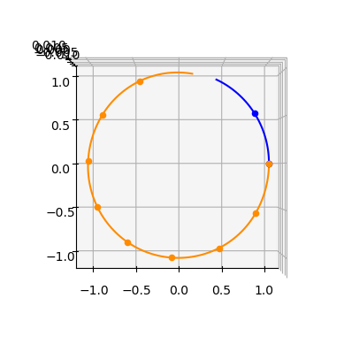

The Zero-Order-Hold trajectory leg for solar sailing#
The Zero-Order-Hold (ZOH, parameterized by the cut parameter) solar-sail trajectory leg is implemented in pykep as pykep.leg.zoh_ss. The method is described in [IHA+26] as a ZOH \(_\alpha\) transcription. Conceptually, this class extends the same forward-backward matching framework used by pykep.leg.zoh, but specializes it to a 6D state and 2D sail-orientation controls.
Given an initial state \(\mathbf{x}_0=[\mathbf r_0,\mathbf v_0]\), a final state \(\mathbf{x}_f=[\mathbf r_f,\mathbf v_f]\), and a time grid \(\{t_k\}_{k=0}^{N}\), the leg is partitioned into \(N\) segments. On each segment \(k\), the control is represented by $\( \mathbf{u}_k=[\alpha_k,\beta_k], \)\( and the full control vector is \)\( \mathbf{u}=[\mathbf{u}_0,\mathbf{u}_1,\ldots,\mathbf{u}_{N-1}]. \)$
A forward-backward shooting construction enforces continuity at the matching point, yielding the mismatch (defect) constraints and their analytical Jacobians with respect to states, controls, and time-grid variables.
We start with the required imports:
import pykep as pk
import heyoka as hy
import numpy as np
import pygmo as pg
from copy import deepcopy
#%matplotlib ipympl
%matplotlib inline
# Tolerances used in the numerical integration
# Lower tolerances are faster but less accurate (required tolerance depends on regime).
tol = 1e-10
tol_var = 1e-6
# Instantiate ZOH Taylor integrators for solar-sail dynamics (provided by pykep).
# Contract with leg.zoh_ss: state dimension = 6; first 2 parameters are controls;
# variational dynamics are first-order sensitivities w.r.t. state and controls.
ta_global = pk.ta.get_zoh_ss(tol)
ta_var_global = pk.ta.get_zoh_ss_var(tol_var)
# Non-dimensional units (the ZOH Taylor integrator expects MU=1 and sail flux at L=1).
MU = 139348062043.343e9 # MU of the fictitious ALTAIRA star (gtoc13)
L = 149597870.691e3 # reference radius (1 AU), where Altaira flux is defined
V = np.sqrt(MU / L)
TIME = L / V
ACC = V / TIME
1 - Validate the Zero-Order-Hold solar-sail leg#
We first validate the implementation by comparing analytical gradients from pykep.leg.zoh_ss against finite-difference estimates.
This section also illustrates the standard construction workflow: define boundary states, build controls and time grid, instantiate the leg, then query constraints and Jacobians.
We start with a helper function used for numerical differentiation:
# This assumes a copy of the leg because it mutates the object.
def compute_mismatch_constraints_n(leg_mod, state0, controls, state1, tgrid):
leg_mod.tgrid = tgrid
leg_mod.state0 = state0
leg_mod.state1 = state1
leg_mod.controls = controls
return leg_mod.compute_mismatch_constraints()
We now instantiate a representative leg by selecting the number of segments, the cut, and the control vector in non-dimensional units.
# Leg random data
nseg = int(np.random.uniform(4, 20))
controls = np.random.uniform(-np.pi / 2, np.pi / 2, (2 * nseg,))
cut = np.random.uniform(0, 1)
# Non-dimensional test states and time grid
state0 = [1, 0, 0, 0, 1, 0]
state1 = [1, 0, 0, 0, 1, 0]
tgrid = np.linspace(0, 2 * np.pi, nseg + 1)
# Set integrator parameters
ta_global.pars[2] = 0.052059975027635791
ta_var_global.pars[2] = 0.052059975027635791
# Instantiate the leg
leg = pk.leg.zoh_ss(state0, controls.tolist(), state1, tgrid, cut=cut, tas=[ta_global, ta_var_global])
We now compute and store the analytical mismatch-constraint Jacobians:
grad_an_mc = leg.compute_mc_grad()
… and compare with numerical estimates. We use pagmo finite differences as a consistency check.
# Check on dmc/dx0
leg_copy = deepcopy(leg)
grad_num = pg.estimate_gradient(lambda x: compute_mismatch_constraints_n(leg_copy, x, leg_copy.controls, leg_copy.state1, leg_copy.tgrid), leg_copy.state0).reshape(6, -1)
np.linalg.norm(grad_num - grad_an_mc[0])
2.9331888750253909e-08
# Check on dmc/dxf
leg_copy = deepcopy(leg)
grad_num = pg.estimate_gradient(lambda x: compute_mismatch_constraints_n(leg_copy, leg_copy.state0, leg_copy.controls, x, leg_copy.tgrid), leg.state1).reshape(6, -1)
np.linalg.norm(grad_num - grad_an_mc[1])
2.8075291503041945e-07
# Check on dmc/dcontrols
leg_copy = deepcopy(leg)
grad_num = pg.estimate_gradient(lambda x: compute_mismatch_constraints_n(leg_copy, leg_copy.state0, x, leg_copy.state1, leg_copy.tgrid), leg.controls, dx=1e-8).reshape(6, -1)
np.linalg.norm(grad_num - grad_an_mc[2])
4.0215717307134867e-07
# Check on dmc/dtgrid
leg_copy = deepcopy(leg)
grad_num = pg.estimate_gradient(lambda x: compute_mismatch_constraints_n(leg_copy, leg_copy.state0, leg_copy.controls, leg_copy.state1, x), leg.tgrid).reshape(6, -1)
np.linalg.norm(grad_num - grad_an_mc[3])
7.712035457959523e-08
The differences are small and consistent with finite-difference truncation/roundoff errors. In practice, analytical Jacobians are preferable for accuracy and efficiency.
We can now visualize the stitched forward/backward trajectory segments, together with the planetary orbits.
ax = pk.plot.make_3Daxis()
fwd, bck, success = leg.get_state_info(N=100)
for segment in fwd:
ax.scatter(segment[0,0], segment[0,1], segment[0,2], c = 'blue')
ax.plot(segment[:,0], segment[:,1], segment[:,2], c= 'blue')
for segment in bck:
ax.scatter(segment[0,0], segment[0,1], segment[0,2], c = 'darkorange')
ax.plot(segment[:,0], segment[:,1], segment[:,2], c= 'darkorange')
ax.view_init(90,-90)
